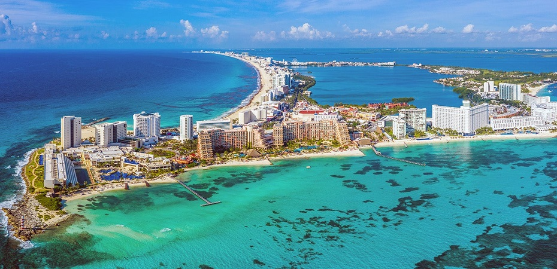
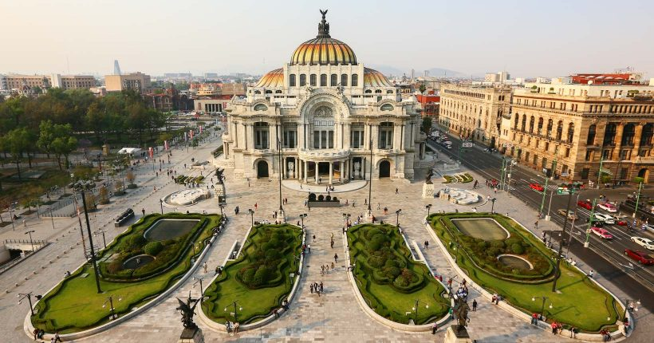

O México, ou Estados Unidos do México, é o único país da América Latina que também faz parte da América do Norte. Limita-se ao norte com os Estados Unidos, ao sul com os países da América Central, a leste com o Oceano Atlântico e a oeste com o Oceano Pacífico.
Este país atrai os turistas por meio de paisagens culturais, como a cidade do México, a mais visitada dentre as cidades. Além de arquiteturas históricas como as ruínas arqueológicas, oriundas da cultura Mesoaméricana. O país apresenta, ainda, diversas paisagens naturais, especialmente litorâneas, como: Acapulco e Cancun, com exuberantes praias.
Por causa do destaque da indústria do turismo no país, as lideranças políticas têm direcionado um grande volume de investimentos na modernização da infra-estrutura que envolve a atividade, como em: portos, aeroportos, rodovias. Além disso, o governo oferece condições para o desenvolvimento do setor hoteleiro, com objetivo de disponibilizar um serviço de qualidade aumentando, assim, o fluxo de turistas para o país.
 Os burritos estão entre dos principais alimentos da culinária mexicana. Na prática, nada mais são do que pães assados em formato de disco, parecidas com panquecas.
Feitas com milho ou trigo, as tortilhas recebem diversos tratamentos para se transformarem nas principais iguarias consumidas pelos mexicanos.
Uma das comidas típicas do México mais conhecidas entre os estrangeiros, os burritos são encontrados em todo canto, desde restaurantes requintados a barraquinhas na rua.
Preparado com abacate, tomate, cebola, especiarias e temperos, o guacamole é um dos mais famosos pratos típicos do México, servida como acompanhamento de nachos ou no recheio de diversos quitutes.
Esse purê de abacate bem picante é consumido em praticamente todos os lugares: em restaurantes, barraquinhas de comida e em casa.
O México é um lugar lindo, principalmente por conta das suas praias, como eu sou apaixonado em praia sou meio suspeito para falar. Meu principal interesse para viajar para lá é por conta de suas praias, principalmente as praias de Cancún. Também tem o golfo do México, que é uma extensão gigantesca coberta por água e que se conecta com as águas do caribe.